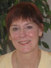
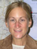
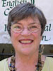

Sarah Eleanor Cohen, Instructor
Grew up in New York State. BFA from California College of Arts; MA in Teaching English to Speakers of Other Languages from San Francisco State University. She has traveled to more than ten countries and hopes to do more. She enjoys knitting and art and has a full-time interest in meditation. What she likes about the English Center: the staff and the campus.
Back to Top
Michael Goldberg, Associate Director for Operations
From Plainfield, Vermont. BA in Economics from the University of California Santa Cruz; MEd in Adult/International Education from the University of Massachusetts at Amherst. Michael taught as a Peace Corps Volunteer in Thailand 1989-91 and at Phanat Nikhom Refugee Camp 1991-93; he directed education programs for five years at Asian Neighborhood Design and Lao Family Community Development in Oakland. He was a student at Hangzhou University in China, taught in Taiwan, and traveled extensively in China, Thailand, Cambodia, and Vietnam. Michael has two daughters, nine and three months old. He enjoys travel, reading, hiking, and all kinds of spicy food. What he likes best about the English Center: the commitment of the students to their study, the fantastic staff, and the transformative nature of adult education.
Back to Top
Marcy Jackson, Executive Director
Born in Washington D.C., grew up on the eastern seaboard. BA in Anthropology from George Washington University; MA in Linguistics from the University of California at Berkeley. Marcy has traveled widely, especially in Asia. Her interest in education and English began with teaching conversational English to Japanese high school students, while a high school student herself in Japan. She continued volunteer teaching in San Francisco Chinatown after college, and then decided to major in linguistics in graduate school. She taught at the University of San Francisco and was one of the “founding mothers” of ECIW in 1977. In the early 1980s, Marcy began ECIW’s Immigrant Women’s Program which developed into today’s Career Advancement Program. Under her leadership, the English Center has expanded its mission, programs and funding base so that the Center can serve an economically as well as culturally and linguistically diverse constituency. "Working at ECIW since its inception has given me the opportunity to try every position this vital non-profit with its innovative programs has to offer. Currently, my focus as director is on working to realize our strategic vision, ensuring that the English Center is preparing our students for success in the local and global workforce. On a personal level, when a student comes to me and says, 'I love ECIW. This is my second family. ECIW has changed my life forever,' it gives my own life deeper meaning."
Back to Top
Nancy Lam, Instructor, Computer Education Coordinator,
and International Student Coordinator
Born in Oakland and raised in Riverbank, California. BA in Spanish from California State University Stanislaus; MA in Teaching English to Speakers of Other Languages from San Francisco State University; Certificate in TESOL. Nancy has traveled to Hong Kong, China, Thailand, New Zealand, and all over Europe. She lived in Mexico as part of earning her Spanish degree. A first generation Chinese-American, her love of languages came from a desire to communicate with both Chinese and English speakers. She does graphic design as a hobby to relax. What she likes about the English Center: "I love interacting with the students and knowing that I'm helping them develop lifelong skills."
Back to Top
Raila Lomidze, Student Office Assistant
Raila came to the U.S. from Russia in 2005. She started her studies at the English Center in August 2006 and continues to be a student here. She lives with her mother and father, her sister, and her grandmother. She loves volleyball and listening to music. She enjoys taking inventory and going to the post office.
Back to Top
Mara Luning, Instructor
Born in sunny and warm Southern California. BA in Liberal Studies and Spanish from Chapman University; MA in English and Teaching English to Speakers of Other Languages from San Francisco State University. She lived in Mexico for six months studying Spanish, traveled to twenty-one countries, and hopes to add Brazil to her list next year. In her spare time, she loves to read, cook, and dance salsa. What she likes about the English Center: the friendly, helpful, and collaborative staff.
Back to Top
Marianna Matthews, Instructor and Programs Coordinator
Born and raised in the San Francisco Bay Area. BA and MA in English from California State University East Bay; Certificate in Teaching English to Speakers of Other Languages from UC Berkeley Extension, and Certificate in Online Teaching and Learning from California State University East Bay. Marianna has a wide range of experience teaching both native and non-native English speakers in California and Japan―in universities, community colleges, and intensive English programs. She lived and taught for eight years in Japan. What she likes about the English Center: She says, “ECIW is not so much about passing and failing as it is about enabling our students to acquire the knowledge they need to be independent and successful. This program has a strong feeling of community, even family, unlike any other place I have taught. The people here―students, staff, and faculty―care about each other.”
Back to Top
Alexa Poeter, Instructor
Born in San Francisco. BA in Human Development from the University of California San Diego; MA in Teaching English to Speakers of Other Languages from San Francisco State University. She has taught composition at San Francisco State University and ESL support at the Academy of Art in San Francisco. Alexa’s overseas experience includes two years in the JET Program in Japan and three months teaching business English in Mexico. She enjoys traveling, reading, watching movies, hiking, and camping. What she likes about the English Center: the diversity of the students, and the positive energy of the students, teachers, and staff.
Back to Top
Mayra E. Ramirez, Career Center Counselor
Mayra is from Jalisco, Mexico and came to the U.S. in 1998. She started as a student at the English Center in August 2001 and graduated in July 2002. She and her husband have two children, six-year-old Alejandro and two-year-old Eduardo. Mayra loves to dance and spend time with her family. She likes cooking, and in her spare time loves to shop with her sisters and visit with her mother. What she likes about the English Center: Mayra likes to help people in many different ways; she likes Mills College and her co-workers.
Back to Top
Glenda Robinson, Instructor
Born in Tucson, Arizona. BA in History and Spanish from the University of California at Berkeley; MA in Teaching English to Speakers of Other Languages in progress from San Francisco State University. Also earned an LLB and LLM, and a Certificate in Teaching English as a Second Language. Glenda spent twenty-four years practicing law and four years teaching ESL at the English Center. She has traveled frequently to Italy, France, Turkey, and the UK. Her interests are studying languages (currently Turkish), traveling, reading, and biking. What she likes about the English Center: The students! They all have very impressive life experiences, and they are very motivated to learn English. She says, “Teaching English is my best job ever.”
Back to Top
Amirah Schwartz, Instructor
Born in Redlands, California. BA in Language Studies from the University of California Santa Cruz; MA in Teaching English to Speakers of Other Languages from San Francisco State University. What she likes about the English Center: Amirah loves the magic that happens when everyone is learning from one another. She says that she finds people to be essentially the same at heart, that we all want a better life for ourselves and our families. She finds working at the English Center both humbling and inspiring.
Back to Top
Berna Sezgen, Instructor
BA in English and Political Science from St. Louis University; MA in Teaching English to Speakers of Other Languages from San Francisco State University. She has traveled all over the world with her family, seeing many interesting countries. Berna is married and has two children. She and her family love the outdoors, sports, and travel to exotic places. She especially loves teaching English through computers and English through technology. She thinks that learning a language should be fun. What she likes about the English Center: helping our very motivated students from all over the world adapt to the U.S.
Back to Top
Rimma Shchukina, Business Officer
Rimma came to the US from Belarus in July 2001. She started her studies at ECIW in August 2001 and graduated in August 2002. In her free time, Rimma loves to read books. She also loves movies, cooking, and spending time with her family. What she likes about the English Center: the family atmosphere, and the fact that she can help other immigrants.
Back to Top
Nancy Taylor, Instructor and Career Placement Counselor
Born in Oklahoma, grew up in the southern US, Saudi Arabia, and Bahrain. BA in English from Mary Washington College; joined the Army and became an Arabic translator; MA in English from the University of Alabama in Huntsville; TESL Certificate, Class A Teaching Certificate, and AA in Paralegal Studies. In addition to teaching adults, nancy has experience teaching high school and middle school students. She has lived in Saudi Arabia for a number of years and has traveled in Europe, Africa, and the Middle East. She loves to read, travel, meet new people, and eat home cooking. She has two Maltese dogs named Popi and Cali. What she likes about the English Center: the students!
Back to Top
Angelica Vera, Registrar
Angelica came to the U.S. from Mexico in November 1987. She started studying at the English Center in Fall 1999 and graduated in Spring 2001. She has a husband, a stepson, and three daughters. With her family, Angelica likes to go to the movies, go sightseeing, and sometimes to visit Mexico. What she likes about the English Center: Angelica loves to see our students moving forward in life, and this makes her feel that she is part of something important―making a difference in someone’s life. She appreciates her job as registrar, and learned at the English Center that she could work at a higher level.
Back to Top
Lynne Bierer Wilkins, Associate Director for Programs
Born in Philadelphia, Pennsylvania. BA in Second Language Pedagogy, Minor in Hispanic Studies from Mills College; MA in English with a Concentration in Teaching English as a Second/Foreign Language, San Francisco State University. Lynne has a wide range of experience teaching in Bay Area adult schools, intensive English programs, universities, community colleges, and corporations. She is a co-founder of Teaching English in the Workplace Interest Group (TEW-IG), CATESOL (California Teachers of English to Speakers of Other Languages) and past coordinator of TEW-IG, CATESOL. Lynne has traveled in northern Spain, central and southern Mexico, central Italy, England and Scotland, and Australia. Her family includes a husband and daughter, stepdaughter and stepson. Her interests include cross country skiing, hiking, cooking, salsa and zydeco dancing, traveling, reading good books, and lively discussions about current events. What she likes best about ECIW: “The English Center has enabled me to achieve the goals I set when I decided to become an ESL/EFL teacher. I wanted to spend my time working so that the work could ‘make a difference’ for people or for a community. The English Center does both. The small classes allow each teacher to know and to help each student with her or his English and also with connecting to other resources in the community. And The English Center helps global communities by training individuals who are confident and ready to participate.”
Back to Top
Erika Yim-ping Wong, Student Services Officer
Erika came to the United States from Hong Kong in December 2003. She started her studies at the English Center in May 2004 and graduated in July 2005. She loves shopping, sometimes to buy things but other times just window shopping. She also loves listening to music, which helps her to relax. What she likes about the English Center: She loves learning about other cultures, for example, Mexico and Russia. She appreciates her nice co-workers, and she feels she is continually improving her English.
Back to Top